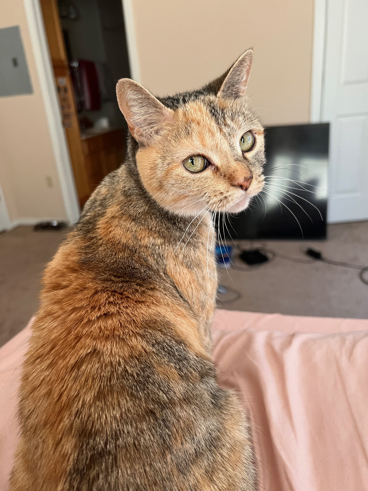

My name is Shriya Vankadara and I am a senior in Informatics with a Human Centered Coputing cognate. Originally I am from Trenton, New Jersey, but moved to Bloomington, Indiana to attend Indiana University. Academeically I really enjou learning about new technological changes in the industry and I really enjoy coding and making my own webpages or other coding programs. My favorite class so far would be i399 Project management for the cloud because it's the perfect mix of technical and business lessons. Personally I have intrestes outside my academnics and to name one would be animals. I really enjoy spedning time with my cats, Ashtro 8months and Luna 9yrs. I spend my free time working at animals rescues and rehabilitating injured or stray cats. This is how I found Astro. This summer I hope I have a job in tech. However, I will still move to a different state weather I get a job or not. Maybe out West!
